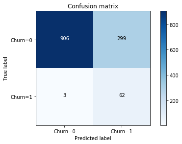

Overview:
This report presents a recommended predictive model for identifying customer with the greatest risk of defaulting from QWE inc’s solution services over the next two months(after February 2012). This model also presented the top three drivers of churn for the identified customers. The model was built from a RandomForestClassifier using the following information to predict a customer’s likelihood to leave the company:
Customer age
CHI Score Month 0
Days Since Last Login 0-1
Q1 What are the two important predictors of customer churn

code for calculating and Visualizing feature importance
import pandas as pd
import numpy as np
import seaborn as sns
import matplotlib.pyplot as plt
# Classifier Libraries
from sklearn.linear_model import LogisticRegression
from sklearn.svm import SVC
from sklearn.neighbors import KNeighborsClassifier
from sklearn.tree import DecisionTreeClassifier
from sklearn.ensemble import (RandomForestClassifier, AdaBoostClassifier,
GradientBoostingClassifier,ExtraTreesClassifier)
from xgboost.sklearn import XGBClassifier
# Model selection & evaluation
from sklearn.metrics import precision_score, recall_score, f1_score, roc_auc_score,
accuracy_score, classification_report
from sklearn.metrics import confusion_matrix
# 1.Import dataset
data=pd.read_excel('Churn_Case.xlsx','Case Data')
# 2.Rename column name
data=data.rename(index=str, columns={'Churn (1 = Yes, 0 = No)':'Churn','Customer
Age (in months)':'Customer Age'})
# 3.Drop customer ID
data=data.drop('ID',axis=1)
# 4.Feature importance
#import lib
from xgboost import XGBClassifier
from xgboost import plot_importance
from sklearn.ensemble import (RandomForestClassifier, AdaBoostClassifier,
GradientBoostingClassifier,ExtraTreesClassifier)
#plot
from matplotlib import pyplot
import plotly.offline as py
py.init_notebook_mode(connected=True)
import plotly.graph_objs as go
import plotly.tools as tls
# Initiate model
rf=RandomForestClassifier()
et=ExtraTreesClassifier()
ada=AdaBoostClassifier()
gb=GradientBoostingClassifier()
xg=XGBClassifier()
# split data into X and y
X= data.drop(['Churn'], axis=1)
y=data['Churn']
X_columns=data.drop(['Churn'], axis=1).columns.values
#train model
rf.fit(X,y)
et.fit(X,y)
ada.fit(X,y)
gb.fit(X,y)
xg.fit(X,y)
# Get feature importance
rf_features =rf.feature_importances_
et_features = et.feature_importances_
ada_features = ada.feature_importances_
gb_features = gb.feature_importances_
xg_features=xg.feature_importances_
# create feature importance dataframe
feature_dataframe = pd.DataFrame( {
'Random Forest feature importances': rf_features,
'Extra Trees feature importances': et_features,
'AdaBoost feature importances': ada_features,
'xg Boost feature importances': xg_features,
'Gradient Boost feature importances': gb_features,
'features': X_columns
})
# create average feature importance dataframe
feature_dataframe['mean'] = feature_dataframe.mean(axis= 1)
feature_dataframe.sort_values(by='mean',ascending=False)
y = feature_dataframe['mean'].values
x = feature_dataframe['features'].values
data = [go.Bar(
x= x,
y= y,
width = 0.5,
marker=dict(
color = feature_dataframe['mean'].values,
colorscale='Portland',
showscale=True,
reversescale = False
),
opacity=0.6
)]
layout= go.Layout(
autosize= True,
title= 'Barplots of Mean Feature Importance',
hovermode= 'closest',
# xaxis= dict(
# title= 'Pop',
# ticklen= 5,
# zeroline= False,
# gridwidth= 2,
# ),
yaxis=dict(
title= 'Feature Importance',
ticklen= 5,
gridwidth= 2
),
showlegend= False
)
fig = go.Figure(data=data, layout=layout)
py.iplot(fig, filename='bar-direct-labels')
Q2 What is the natural customer segmentation with the churn risk?
2.1 Check the Monthly Churn rate by Customer age
data[['Churn','Customer Age']].groupby('Customer Age').mean().plot.bar(figsize=(15,5),
title='Monthly Churn rate by Customer age')
2.2 Churn Rate by age segmentation (Whole data) -Mid:(7-16]> Old:(16-67]>Young:(0-7]
we could divide the customer age to 3 categories based on quantiles : young:(0-7], mid:(7-16],old:(16-67]
pd.qcut():Discretize variable into equal-sized buckets based on rank or based on sample quantiles.
Create a new feature ‘CategoricalAge’ and based on the new feature to calculate the churn rate for each age segmentation.
The mid group has the highest percentage to churn, next one is old group,then the young group
data['CategoricalAge']= pd.qcut(data['Customer Age'], 3)
print(data[['CategoricalAge', 'Churn']].groupby(['CategoricalAge'], as_index=False).mean())
CategoricalAge Churn
0 (0.999, 7.0] 0.025552
1 (7.0, 16.0] 0.080366
2 (16.0, 67.0] 0.051183

2.3 Churn Rate by age segmentation (churn=1) -Young:(0.999-7-12]> Old:(16-47]>Mid:(12-16]
In the subset data (Churn==1),based on quantiles to divede the age for 3 parts :(0.999, 12.0] ,(12.0, 16.0] ,(16.0, 47.0]
we found month 12 not only occupies large percentage of the customer age,but also is the time most customer choose to churn, there are 56 customers left in this month.
pd.qcut(data[data['Churn']==1]['Customer Age'],3)
plt.figure(figsize=(15,5))
data[data['Churn']==1]['Customer Age'].value_counts().plot.bar()

The Young group has the highest percentage to churn, next one is old group,then the Mid group
print('Young group:',round(len(data[(data['Churn']==1)&(data['Customer Age']<=12)
&(data['Customer Age']>0.999)])/(len(data['Churn']==1)),4))
print('Mid group:',round(len(data[(data['Churn']==1)&(data['Customer Age']<=16)
&(data['Customer Age']>12)])/(len(data['Churn']==1)),4))
print('Old group:',round(len(data[(data['Churn']==1)&(data['Customer Age']<=47)
&(data['Customer Age']>16)])/(len(data['Churn']==1)),4))
Young group: 0.0244
Mid group: 0.0098
Old group: 0.0167
2.4 Age segmentation Conculsion:
1) We could found 16 are division point in both two cuts.
2) Since month 12 has the maximum churn number, it will be an important month, If we put in the first group then first group will be the most risk group, If we put in the second group then second group will be most risk group. I suggest to put in the second group, use the age cut young:(0-7], mid:(7-16],old:(16-67]
3) Reason: for a small and medium size business like qwe (provide online subscription services), customer who use service for 12 month is a long time,should pay more attention to them. So, it’s better to seperate them with new customers
Q3 Build a model to find out the small subset of particularly risky customers
3.1 Splitting the Data
Before proceeding with the Random UnderSampling technique we have to separate the orginal dataframe. Why? for testing purposes, remember although we are splitting the data when implementing Random UnderSampling or OverSampling techniques, we want to test our models on the original testing set not on the testing set created by either of these techniques. The main goal is to fit the model either with the dataframes that were undersample and oversample (in order for our models to detect the patterns), and test it on the original testing set.
X = data.drop('Churn', axis=1)
y = data['Churn']
sss = StratifiedShuffleSplit(n_splits=5, test_size=0.2, random_state=42)
for train_index, test_index in sss.split(X, y):
print("Train:", train_index, "Test:", test_index)
original_Xtrain, original_Xtest = X.iloc[train_index], X.iloc[test_index]
original_ytrain, original_ytest = y.iloc[train_index], y.iloc[test_index]
# original_Xtrain, original_Xtest, original_ytrain, original_ytest = train_test_split(X, y
,test_size=0.2, random_state=42)
# See if both the train and test label distribution are similarly distributed
train_unique_label, train_counts_label = np.unique(original_ytrain, return_counts=True)
test_unique_label, test_counts_label = np.unique(original_ytest, return_counts=True)
print('-' * 100)
print('Label Distributions: \n')
print(train_counts_label/ len(original_ytrain))
print(test_counts_label/ len(original_ytest))
#Output
Train: [2791 1260 1386 ... 5933 2387 4736] Test: [5613 835 701 ... 6004 4180 5869]
Train: [3868 3385 2151 ... 768 2401 46] Test: [3257 5589 5299 ... 6140 3425 2872]
Train: [1979 595 77 ... 391 845 5531] Test: [5762 1017 2704 ... 4026 3217 5007]
Train: [ 3 3003 2026 ... 3527 819 859] Test: [4126 5827 2926 ... 983 5226 796]
Train: [1995 5377 1192 ... 4003 1082 2392] Test: [5272 1151 1336 ... 1038 1299 3217]
----------------------------------------------------------------------------------------------------
Label Distributions:
[0.94917258 0.05082742]
[0.9488189 0.0511811]
3.2 Random Undersampling
In this phase of the project we will implement “Random Under Sampling” which basically consists of removing data in order to have a more balanced dataset and thus avoiding our models to overfitting.
Steps:
1) The first thing we have to do is determine how imbalanced is our class (use “value_counts()” on the Churn column to determine the amount for each label)
data['Churn'].value_counts().plot(kind='bar')
plt.show()
# Churn is the target column, it has two value 0 and 1.
#(Churn = "1") means customer acturally left in the two months after Dec 1st
#(Churn = "0") means customer acturally continue use the service.
# Churn has a large imbalance between it's two value
0 ： 6024
1 ：323
2) Once we determine how many instances are considered Churn customers (Churn = “1”) , we should bring the
Non-churn customers (Churn = “0”) to the same amount as Churn customers (assuming we want a 50/50 ratio), this will be equivalent to 323 cases of Churn and 323 cases of Non-churn.
3) After implementing this technique, we have a sub-sample of our dataframe with a 50/50 ratio with regards to our classes. Then the next step we will implement is to shuffle the data to see if our models can maintain a certain accuracy everytime we run this script.
# Since our classes are highly skewed we should make them equivalent in order to have
a normal distribution of the classes.
# Lets shuffle the data before creating the subsamples
new_df= data[['CHI Score 0-1','CHI Score Month 0','Views 0-1','Customer Age',
' Days Since Last Login 0-1','Churn']].sample(frac=1)
# Take same amount (323 rows) of churn and non-churn cases.
Left_df = new_df.loc[new_df['Churn'] == 1]
Stay_df = new_df.loc[new_df['Churn'] == 0][:323]
normal_distributed_df = pd.concat([Left_df, Stay_df])
# Shuffle dataframe rows
new_df = normal_distributed_df.sample(frac=1, random_state=42)
Note: The main issue with “Random Under-Sampling” is that we run the risk that our classification models will not perform as accurate as we would like to since there is a great deal of information loss (bringing 323 Churn=0 customers from 6,024 Churn=0 customers)
3.3 Test Data with RandomForestClassifier:
Random UnderSampling: We will evaluate the final performance of the classification models in the original_ytest
Classification Models: The models that performed the best were RandomForestClassifier
Recall metric in the testing dataset: 0.95
new_X = new_df.drop('Churn', axis=1).values
new_y = new_df['Churn'].values
new_X_train, new_X_test, new_y_train, new_y_test = train_test_split(new_X, new_y,
test_size=0.2, random_state=42)
#RandomForestClassifier
tree =RandomForestClassifier()
tree.fit(new_X_train, new_y_train)
y_pred = tree.predict(original_Xtest)
print("Test set accuracy score: {:.5f}".format(accuracy_score(y_pred,original_ytest)))
print(classification_report(original_ytest, y_pred, target_names=labels))
print(confusion_matrix(y_pred,original_ytest))
#output
Test set accuracy score: 0.76220
precision recall f1-score support
Churn=0 1.00 0.75 0.86 1205
Churn=1 0.17 0.95 0.29 65
avg / total 0.95 0.76 0.83 1270
Confusion Matrix:
Positive/Negative: Type of Class (label) [‘Churn=1’,’Churn=0’]
True/False: Correctly or Incorrectly classified by the model.
True Negatives (Top-Left Square): This is the number of correctly classifications of the “Churn=0” (Non-Churn customers) class.
False Negatives (Top-Right Square): This is the number of incorrectly classifications of the “Churn=0” (Non-Churn customers) class.
False Positives (Bottom-Left Square): This is the number of incorrectly classifications of the “Churn=1” (Churn customers) class.
True Positives (Bottom-Right Square): This is the number of correctly classifications of the “Churn=1” (Churn customers) class .

Code for the confusion matrix:
import itertools
def plot_confusion_matrix(cm, classes,
title='Confusion matrix',
cmap=plt.cm.Blues):
"""
This function prints and plots the confusion matrix.
"""
plt.imshow(cm, interpolation='nearest', cmap=cmap)
plt.title(title)
plt.colorbar()
tick_marks = np.arange(len(classes))
plt.xticks(tick_marks, classes, rotation=0)
plt.yticks(tick_marks, classes)
thresh = cm.max() / 2.
for i, j in itertools.product(range(cm.shape[0]), range(cm.shape[1])):
plt.text(j, i, cm[i, j],
horizontalalignment="center",
color="white" if cm[i, j] > thresh else "black")
plt.tight_layout()
plt.ylabel('True label')
plt.xlabel('Predicted label')
labels = ['Churn=0', 'Churn=1']
plot_confusion_matrix(tree_matrix
, classes=labels
, title='Confusion matrix')
plt.show()
Q4 what characteristics separate them from the rest of QWE customers?
From the following decision tree, We can see the top 3 characteristics for customer Churn:
If we use these conditions to filter in the original dataset (6346 rows ) we can get 350 customers
includes 279 (Churn=0) and 71(churn=1).
11.5=< Customer Age <=41
CHI Score Month 0 <=73.5
Days Since Last Login 0-1 >=23.5
datamask=data[(data['Customer Age']>=11.5)&(data['Customer Age']<=41)&
(data['CHI Score Month 0']<=73.5)&(data[' Days Since Last Login 0-1']>=23.5)]
datamask['Churn'].value_counts()
0 279
1 71
Name: Churn, dtype: int64

Code for Visualizing a Decision Tree from a Random Forest :
feature_names=new_df.drop('Churn',axis=1).columns
target_names= ['Churn=0', 'Churn=1']
from sklearn import tree
import pydotplus
# Model (can also use single decision tree)
from sklearn.ensemble import RandomForestClassifier
model =RandomForestClassifier(max_depth=5, criterion='gini')
# Train
model.fit(new_X_train, new_y_train)
# Extract single tree
estimator = model.estimators_[5]
from sklearn.tree import export_graphviz
# Export as dot file
dot_data = tree.export_graphviz(estimator, out_file=None,
feature_names = feature_names,
class_names = target_names,
rounded = True, proportion = False,
precision = 2, filled = True)
# Convert to png using system command (requires Graphviz)
from subprocess import call
call(['dot', '-Tpng', 'tree.dot', '-o', 'tree.png', '-Gdpi=600'])
# Draw graph
graph = pydotplus.graph_from_dot_data(dot_data)
# Display in jupyter notebook
from IPython.display import Image
Image(graph.create_png())
Q5 Can our Model support a call-based program to improve customer retention?
From the above step, we use 3 conditions to reduce the risky customers to 350.
Then we can random select 100 customers from those customers. And we repeat selection for 30 times.
The mean Churn rate for 100 customers will be close : 20%
Then calculate the expected return per hundred customers

We get $1000 per hundred customers, it shows our model can support this call_based program.
score=[]
for i in range(1, 30):
dfi=datamask.sample(n=100)
score.append(dfi[:100]['Churn'].value_counts()[1]/100)
print(score)
print("The mean Churn rate for 100 customers :",round(sum(score) / float(len(score)),2))
#Output
[0.2, 0.26, 0.2, 0.2, 0.2, 0.25, 0.17, 0.23, 0.17, 0.29, 0.22, 0.21, 0.24, 0.16,
0.22, 0.2, 0.15, 0.24, 0.19, 0.2, 0.25, 0.18, 0.2, 0.2, 0.14, 0.19, 0.19, 0.21, 0.14]
The mean Churn rate for 100 customers : 0.2